W16 Relatedness


Learning outcomes
In this session we will learn the basics of calculating relatedness within the dartRverse.
Session overview
- Introduction to calculating relatedness and the concept of IBD
- Brief introduction to the concept of genetic relatedness
- What it means for individuals to share alleles identical by descent, and how relatedness coefficients are estimated
- An overview of common relatedness estimators
- Relatedness in dartR
- Calculating relatedness in dartR and the functionality currently available
- Main functions and their use
- Case Study 1 - Pig breeding dataset
- Introduction to the pig breeding dataset
- Cleanup and data preparation
- Comparison of methods
- Case Study 2 - Soay sheep dataset
- Introduction to the Soay sheep dataset
- Cleanup and data preparation
- Comparison of methods
- Inferring an unknown relative - using COLONY
- Intro to COLONY and the problem at large
- Reading in data and basic cleanup
- COLONY run and interpretation of output
- Matching an unknown SNP profile with an individual in the population
- Additional reading
- References and additional reading
- Exercises
- Exercises to work through
- Input participants’ own data
Introduction to genetic relatedness
Estimating how related two individuals are is fundamental in ecological restoration, biodiversity conservation, and agricultural settings. It can provide important insights for managing breeding programs, small populations, mating dynamics, inbreeding, and a range of other key parameters.
The basis for most estimators is the concept of identity by descent (IBD), in which two alleles are considered identical if they are inherited from the same ancestral allele. Relatedness between two individuals is therefore a measure of the proportion of their alleles that are shared IBD, relative to a reference population. Kinship, a closely related measure, is the probability that two alleles, one sampled from each individual, are IBD. For non-inbred diploid individuals, the kinship coefficient is equal to half the coefficient of relatedness.
3. EMIBD9
The EMIBD9 estimator differs from the methods above in that it uses a maximum-likelihood framework. In particular, it estimates the 9 condensed IBD coefficients originally described by Jacquard (1972), from which inbreeding and relatedness (or kinship) can be derived. Wang’s approach is intended to reduce bias that can arise when allele frequencies are estimated from small samples or from samples containing many close relatives. One of its methods jointly estimates both allele frequencies and dyad probabilities from the genotype sample.
Being a continuous and relative measure, all estimates depend on the reference population from which allele frequencies are drawn. As such, we can reasonably expect even accurate estimates to differ from idealised pedigree expectations. In addition, all estimators make assumptions about the populations from which relatedness is being inferred. These may include, but are not limited to, non-overlapping generations, random mating, limited migration, limited admixture, and weak population structure.
Multiple studies have shown that there is no single estimator that performs best across all datasets and species. Estimator performance depends on the population, marker set, and sampling design. This means that relatedness estimation is highly context-dependent, and it is generally good practice to compare multiple estimators for any new dataset.

Example 1 - Peppa Pig gets an SNP panel!
Our first dataset is derived from SNP panels generated for 3,534 pigs sampled from commercial farms across the United States. In addition to extensive genomic records for much of the population, there is also substantial life-history information, including age, sex, and parentage.
We also know that this dataset contains substantial genetic structure, which is unsurprising given its origin. We therefore expect violations of some of the assumptions commonly made by pairwise relatedness estimators, including the assumption of a single, panmictic population with a shared allele-frequency distribution.
Data cleanup and QC
We’ll start with a simple sweep of the dataset, removing individuals with low call rate and filtering monomorphic loci, loci with excess heterozygosity, and low-frequency alleles.
pigFilter <- gl.filter.callrate(pigTest, method = "ind", threshold = 0.5)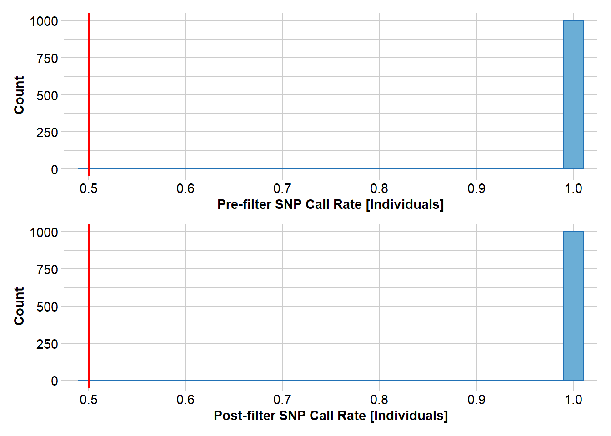
pigFilter <- gl.filter.monomorphs(pigFilter, verbose = 5)pigFilter <- gl.filter.excess.het(pigFilter, recalc = TRUE, verbose = 5)pigFilter <- gl.filter.maf(pigFilter)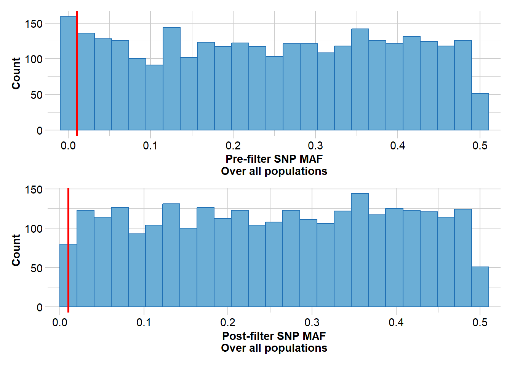
Having filtered for a variety of metrics, we will now create a PCA plot to examine the extent of genetic structure within the population.
Starting gl.gen2fbm
Processing genlight object with SNP data
Completed: gl.gen2fbm Starting gl.pcoa 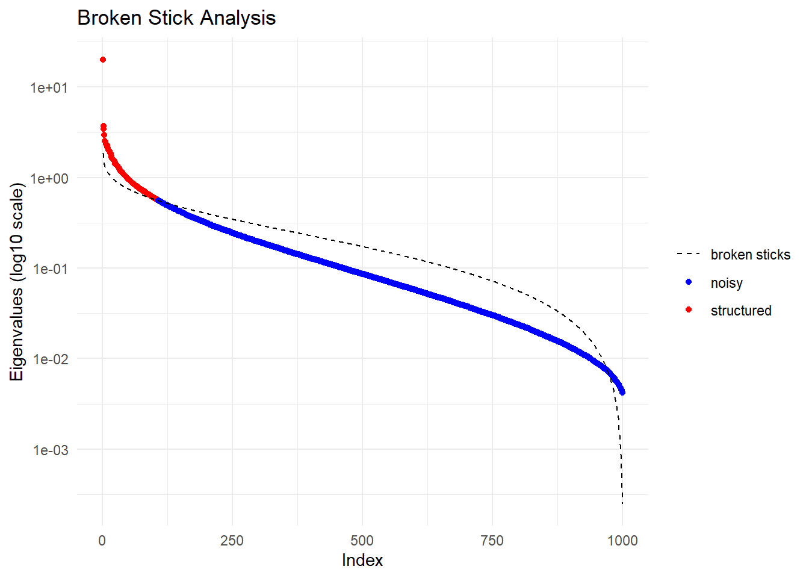
Starting gl.colors
Selected color type 2
Completed: gl.colors
Completed: gl.pcoa Starting gl.pcoa.plot
Processing an ordination file (glPca)
Processing genlight object with SNP data
Plotting populations in a space defined by the SNPs
Preparing plot .... please wait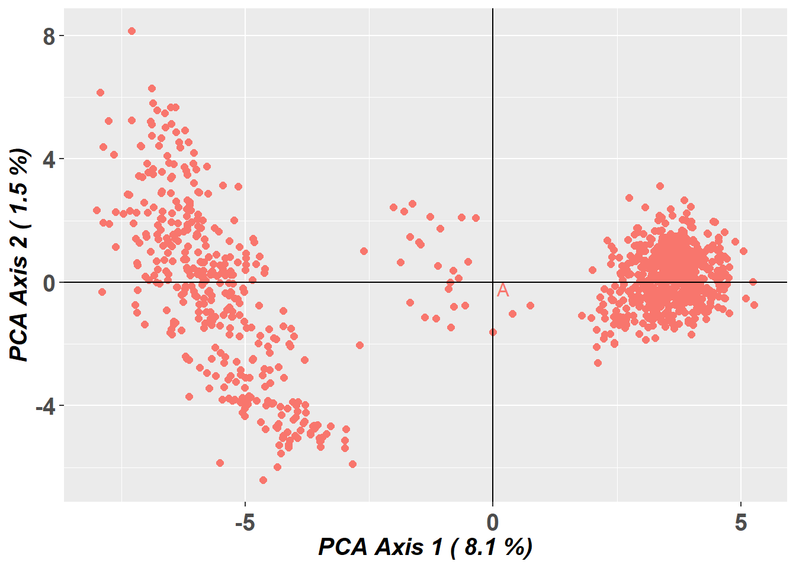
Completed: gl.pcoa.plot There appears to be fairly strong genetic structure within the dataset, with a clear separation of two groups.
Based on this PCA output, we’ll quickly assign groups based on their values from the first principal component before running utils.basic.stats(). We are doing this so that the calculations for statistics such as \(F_{IS}\) and \(H_S\) are made with the two inferred groups taken into account. If we ran the analysis with the single population that is currently assigned, the implicit assumption would be that allele frequencies are constant across the whole sample, which is unlikely to be true. We’ll show how to assign populations more formally a bit later, but for now just trust us :).
Ho Hs Ht Dst Htp Dstp Fst Fstp Fis Dest
0.3314 0.3298 0.3437 0.0139 0.3576 0.0279 0.0406 0.0780 -0.0051 0.0416
Gst_max Gst_H
0.5219 0.1494 These results are broadly consistent with the structure we observed in the PCA. With \(F_{IS} < 0\), there is a slight excess of heterozygotes relative to Hardy-Weinberg expectations, suggesting little evidence of inbreeding at this level. An \(F_{ST}\) of 0.0406 indicates low but non-zero genetic differentiation. In addition, the total expected heterozygosity (\(H_T\)) is higher than the average expected heterozygosity within subpopulations (\(H_S\)), indicating differences in allele frequencies among groups. Taken together, these results suggest that we are not dealing with a single large panmictic population, but rather two subpopulations with distinct allele frequencies.
We will continue our analysis for the purposes of illustration, but our results so far suggest that some relatedness estimators may perform less well unless we account for this structure.
Group A
diagGroupA <- gl.diagnostics.relatedness(
groupA,
cleanup = TRUE,
which_tests = "wang",
IncludePlots = TRUE,
varOut = TRUE,
rmseOut = TRUE,
runE9 = TRUE,
e9Path = "data",
e9parallel = TRUE,
includedPed = TRUE
)diagGroupA@plotList$Iteration1[[1]]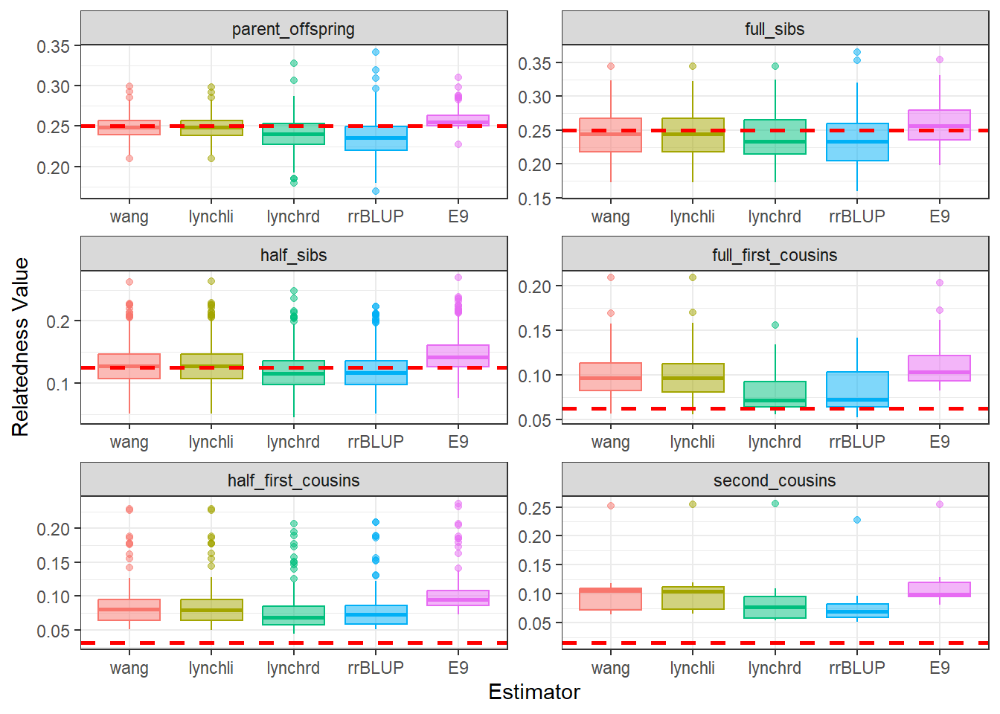
diagGroupA@plotList$Iteration1[[2]]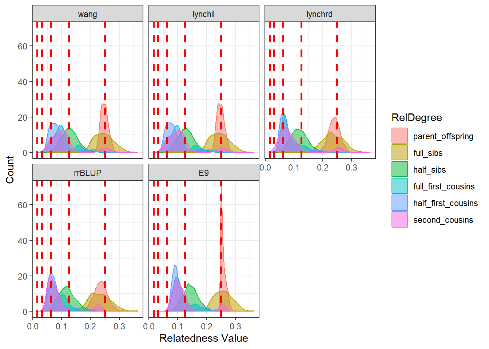
Group B
diagGroupB <- readRDS("data/diagGroupB.rds")diagGroupB <- gl.diagnostics.relatedness(
groupB,
cleanup = TRUE,
which_tests = "wang",
IncludePlots = TRUE,
varOut = TRUE,
rmseOut = TRUE,
runE9 = TRUE,
e9Path = "data",
e9parallel = TRUE,
includedPed = TRUE
)diagGroupB@plotList$Iteration1[[1]]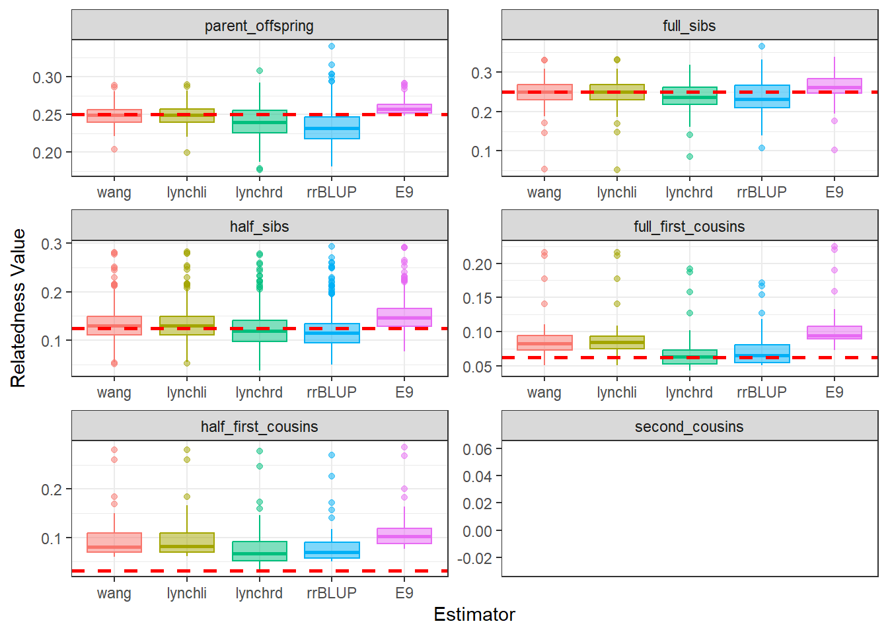
diagGroupB@plotList$Iteration1[[2]]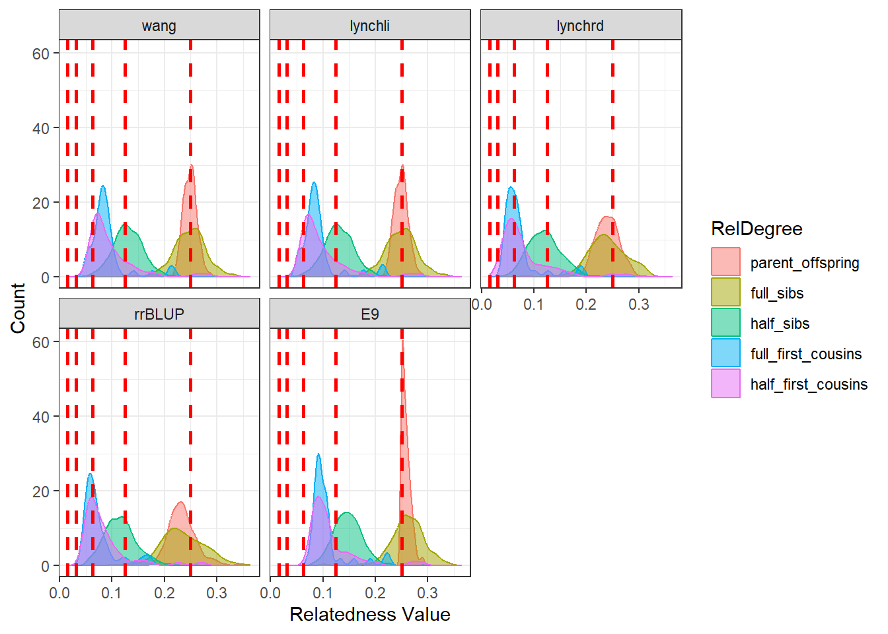
As expected, separating the populations improves the estimates produced by our relatedness methods. The estimates are pulled downward and are more consistent with the pedigree-derived expectations. In addition, there appears to be greater concordance in the number of pairwise relationships identified by each method, as seen in the density plots for both Group A and Group B.
This example highlights the importance of considering population structure when calculating relatedness. In some cases, separating structured populations can be a simple and effective way to improve estimator performance.
Example 2 - Sean the sheep!
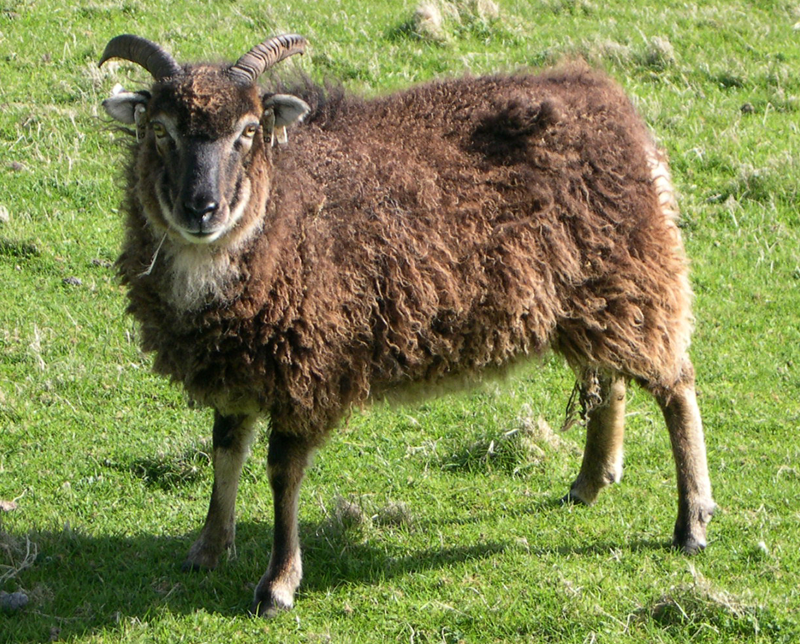
The Soay sheep is a primitive breed descended from sheep found on the island of Soay in the St Kilda archipelago, west of mainland Scotland. A population on the island of Hirta has been counted since 1952 and intensively monitored in its present form since 1985, making it a well-known model system for ecology, evolution, and population dynamics. Over time, this long-term study has been complemented by microsatellite, SNP, and whole-genome data, together with an extensive pedigree and rich life-history information.
We’ve chosen this dataset to provide an example of a population with less obvious large-scale subdivision than the pig dataset, and with unusually rich pedigree and genomic resources. As a result, we expect a better fit to the assumptions of standard relatedness estimators than we saw for the pig data, although the population should not be treated as perfectly panmictic or entirely free of inbreeding.
Cleanup
As with the pig dataset, we’ll start with a simple sweep of the dataset, removing individuals with low call rate and filtering monomorphic loci and low-frequency alleles.
sheepFilter <- gl.filter.callrate(sheepTest, method = "ind", threshold = 0.5)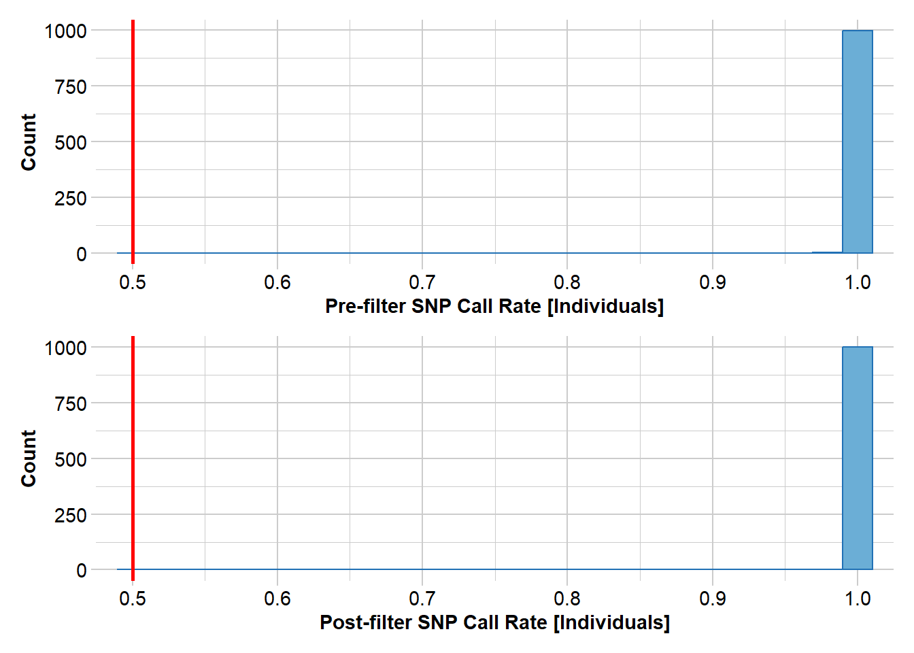
sheepFilter <- gl.filter.monomorphs(sheepFilter, verbose = 5)sheepFilter <- gl.filter.maf(sheepFilter)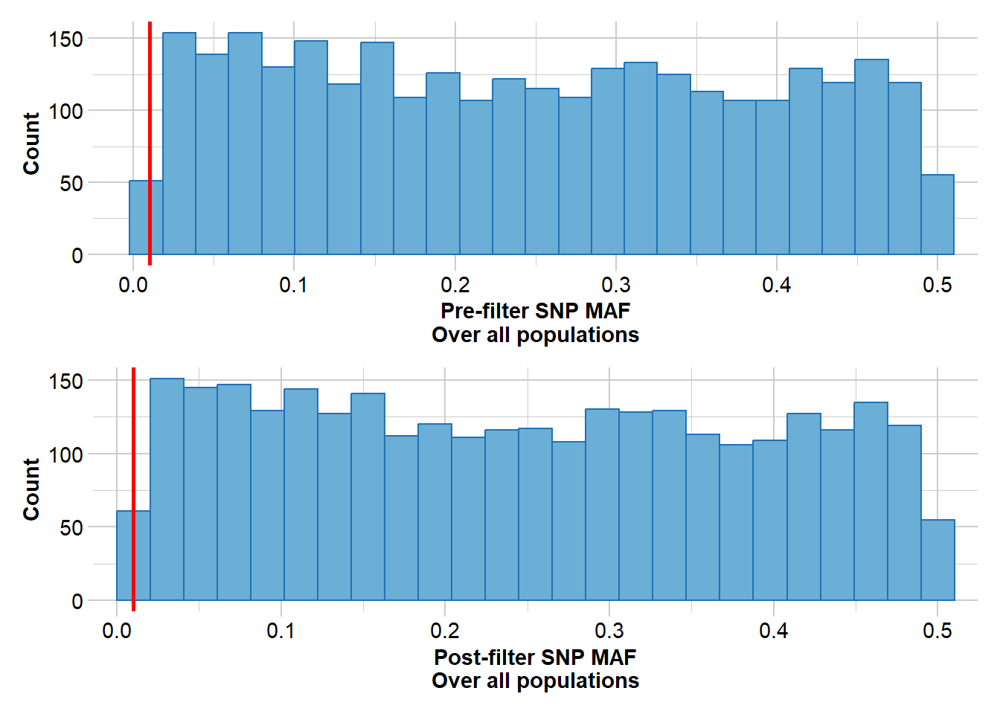
We can now conduct a PCA to determine what, if any, structure we can detect in the population.
Starting gl.gen2fbm
Processing genlight object with SNP data
Completed: gl.gen2fbm Starting gl.pcoa
Starting gl.impute
Completed: gl.impute 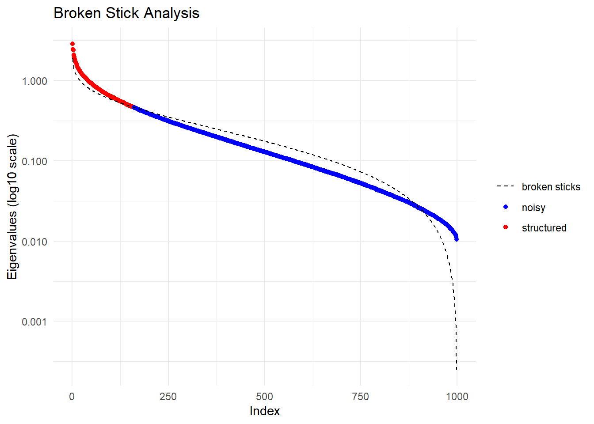
Starting gl.colors
Selected color type 2
Completed: gl.colors
Completed: gl.pcoa Starting gl.pcoa.plot
Processing an ordination file (glPca)
Processing genlight object with SNP data
Plotting populations in a space defined by the SNPs
Preparing plot .... please wait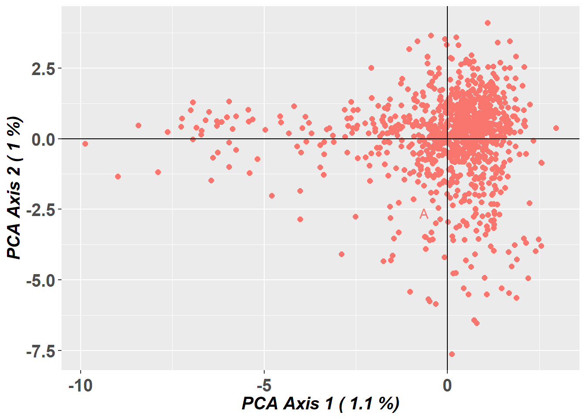
Completed: gl.pcoa.plot From the PCA, there appears to be little obvious large-scale genetic structure, suggesting weaker subdivision than in the pig dataset. That does not mean the population is perfectly panmictic or free of inbreeding, but it does suggest that population structure may be less problematic for pairwise relatedness estimation here.
Just to be sure, though, we will conduct another utils.basic.stats() run.
Ho Hs Ht Dst Htp Dstp Fst Fstp Fis Dest
0.3258 0.3306 0.3306 0.0000 NaN NaN 0.0000 NaN 0.0145 NaN
Gst_max Gst_H
0.0000 NaN With only one population assigned, we cannot calculate measures of differentiation among subpopulations, but with a relatively low \(F_{IS}\) value of 0.0145 there appears to be only a slight heterozygote deficit at the population level. Overall, this suggests that the relatedness estimates may be more consistent here than in the pig dataset.
Exercises
Having now learnt the basics of estimating relatedness, you can work through some exercises that mimic the skills introduced above.

You have spent the last 6 months in the Murray-Darling studying the platypus. You have been trying to understand the genetic basis of its famous bill, which you suspect may be an indicator of sexual fitness and general health.
To understand the molecular basis of this trait and how it is inherited, you have collected samples from 81 individuals and constructed a pedigree by hand from known crosses observed in the wild. Unfortunately, the pedigree was lost when you spilt a full glass of coffee on your laptop!
As a result, you are now left with just the SNP data from previous samples, from which to reconstruct the pedigree, but you are unsure which method is best. You have faith in the dartR package, however, and decide to use it to try to reconstruct your lost pedigree.
1.1 Data read-in
Let’s start by reading in the data. It’s stored in the data folder, which you can access in the folder for tutorial 16. There is both an .RDS file and a .vcf file. You can read the data in using base R’s readRDS() function. For an extra challenge, you can try to read in the VCF file.
# Reading in the RDS file
platypusSNP <- readRDS("data/platypusSNP.rds")1.2 Data filtering
Next we can do some basic data QC - this should be trivial by now!
# Reading in the RDS file
platypusSNP <- readRDS("data/platypusSNP.rds")
# Do a simple report of basics
# gl.report.allna()
# gl.report.callrate()
# gl.report.monomorphs()
# gl.report.rdepth()
# gl.report.sexlinked()
# Time to do some filtering
platypusSNP <- gl.filter.allna(platypusSNP)
platypusSNP <- gl.filter.callrate(
platypusSNP
# The rest is up to you
)
platypusSNP <- gl.filter.monomorphs(platypusSNP)
platypusSNP <- gl.filter.rdepth(
platypusSNP
# The rest is up to you
)
platypusSNP <- gl.filter.sexlinked(
platypusSNP
# The rest is up to you
)1.3 Data QC
Now we can check the composition of our population - just to ensure nothing is awry!
# Start with basic PCoA plot
platypusSNP <- gl.gen2fbm(platypusSNP)
incaPCOA <- gl.pcoa(platypusSNP, nfactors = 5)
incaPCOAPlot <- gl.pcoa.plot(incaPCOA, platypusSNP)What do you think? Is it worth separating into groups or analysing as one?
Next we can check the heterozygosity / inbreeding coefficient.
gl.report.heterozygosity(platypusSNP, method = "ind")What do you think? Is heterozygosity low, or is inbreeding elevated?
References
Endelman, J. B., & Jannink, J.-L. (2012). Shrinkage estimation of the realized relationship matrix. G3: Genes, Genomes, Genetics, 2(11), 1405-1413. https://doi.org/10.1534/g3.112.004259
Hauser, S. S., Galla, S. J., Putnam, A. S., Steeves, T. E., & Latch, E. K. (2022). Comparing genome-based estimates of relatedness for use in pedigree-based conservation management. Molecular Ecology Resources, 22(7), 2546-2558. https://doi.org/10.1111/1755-0998.13630
Jacquard, A. (1972). Genetic information given by a relative. Biometrics, 28(4), 1101-1114. https://doi.org/10.2307/2528643
Lynch, M., & Ritland, K. (1999). Estimation of pairwise relatedness with molecular markers. Genetics, 152(4), 1753-1766. https://doi.org/10.1093/genetics/152.4.1753
Oliehoek, P. A., Windig, J. J., van Arendonk, J. A. M., & Bijma, P. (2006). Estimating relatedness between individuals in general populations with a focus on their use in conservation programs. Genetics, 173(1), 483-496. https://doi.org/10.1534/genetics.105.049940
Queller, D. C., & Goodnight, K. F. (1989). Estimating relatedness using genetic markers. Evolution, 43(2), 258-275. https://doi.org/10.2307/2409206
Wang, J. (2002). An estimator for pairwise relatedness using molecular markers. Genetics, 160(3), 1203-1215. https://doi.org/10.1093/genetics/160.3.1203
Wang, J. (2025). EMIBD9: Estimating 9 condensed IBD coefficients, inbreeding and relatedness from marker genotypes. Heredity, 134(3), 155-161. https://doi.org/10.1038/s41437-024-00739-5
Wang, J., & Jones, O. R. (2010). COLONY: A program for parentage and sibship inference from multilocus genotype data. Molecular Ecology Resources, 10(3), 551-555. https://doi.org/10.1111/j.1755-0998.2009.02787.x